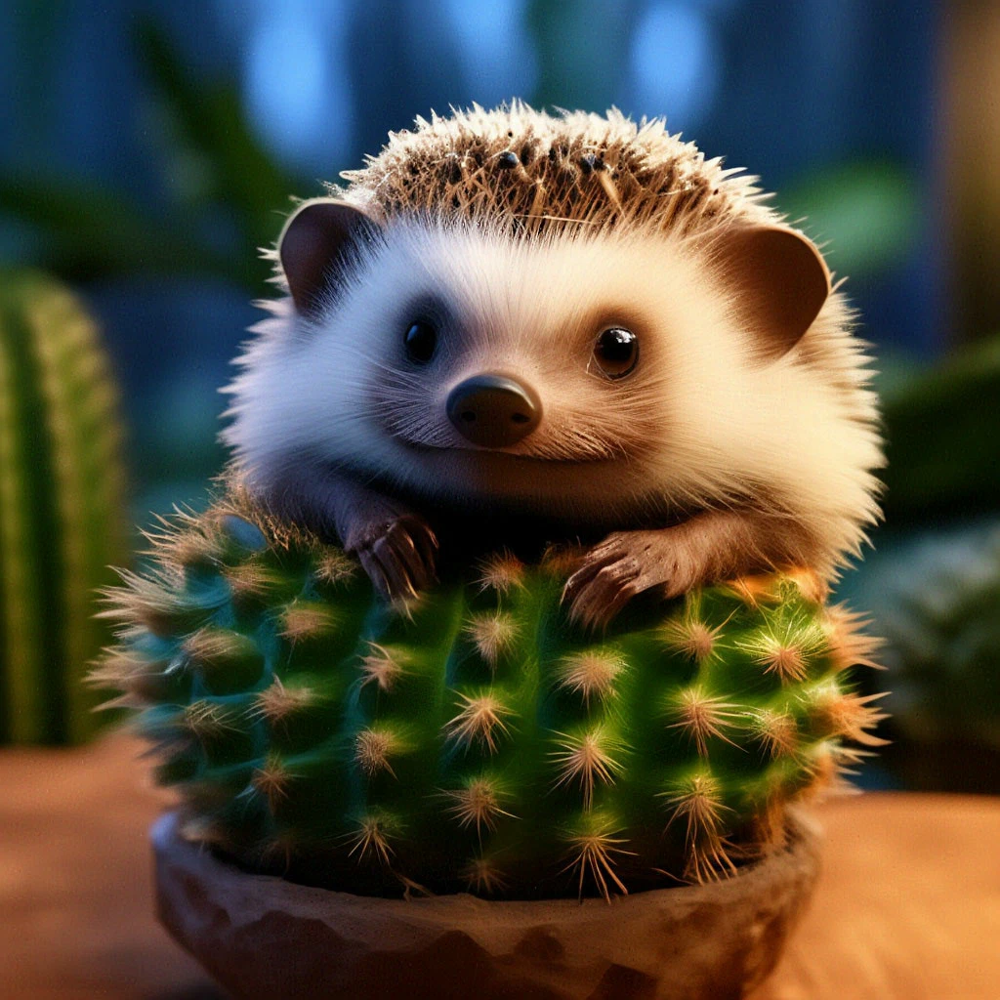
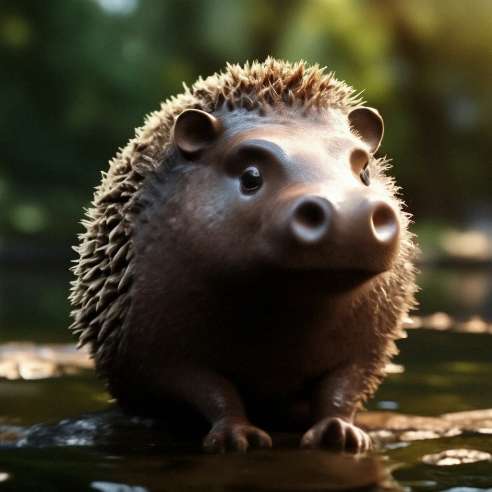
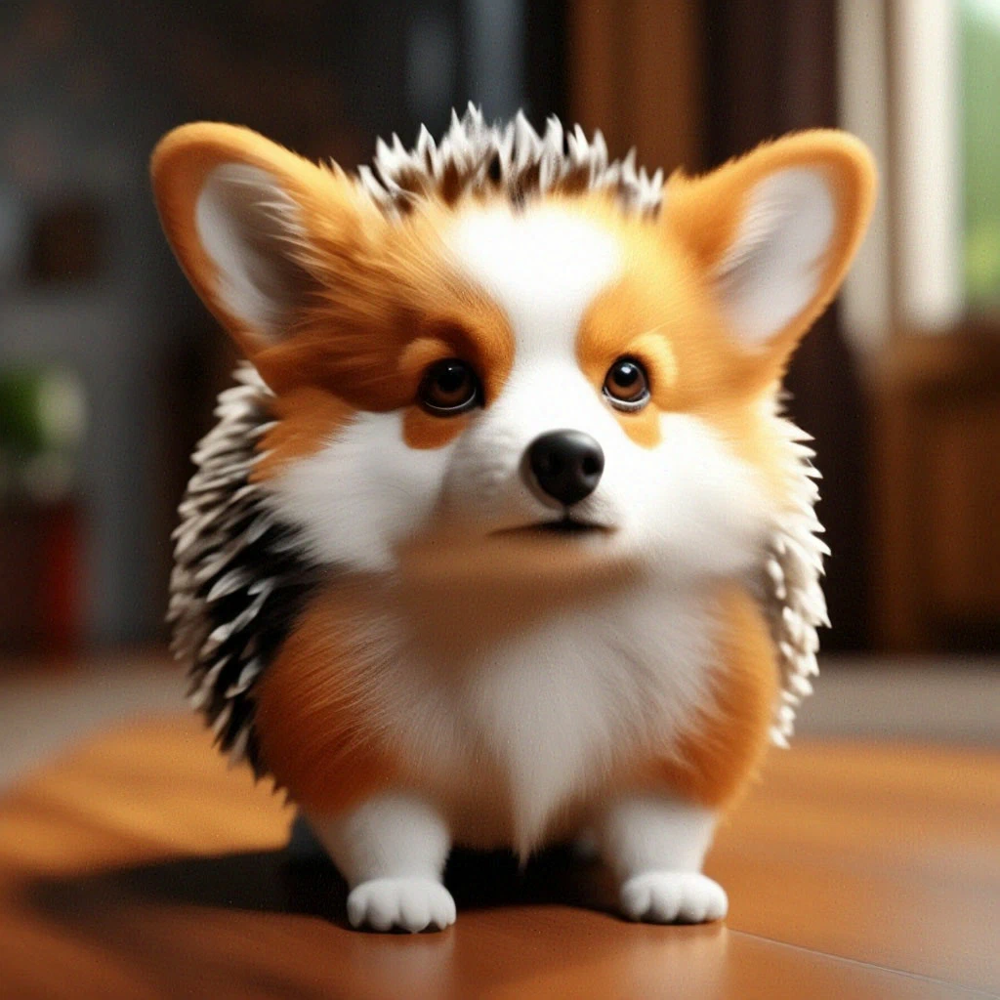
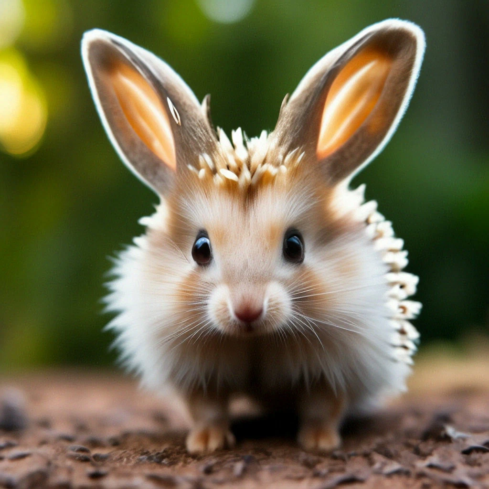

Образ жизни
В течение года у ежовых могут быть 1-2 сезона размножения; вне их ежи ведут одиночный образ жизни и, как правило, имеют индивидуальные участки для поиска пищи. Беременность длится от 30 до 49 дней; в помёте насчитывается от 1 до 7 детёнышей. Половая зрелость наступает в возрасте 10-12 месяцев
Носатый еж
В послеледниковый период, 6—7 тысяч лет назад, на территории Сахары господствовал влажный климат, при котором на месте нынешней пустыни был ландшафт редколесной саванны, а осадков в сезон дождей выпадало 500—700 мм. В то время мордатый еж был обычным обитателем водоёмов, впоследствии исчезнувших. Следы человеческой жизнедеятельности, оставленные в виде кухонных куч, ясно свидетельствуют о наличии в то время в Сахаре мордатых ежей
Шерстяной еж
Отличается от обычного ежа большим размером ушной раковины: длина его ушей до 5 см. Иглами покрыта только спина. Размеры мелкие: длина тела 12—27 см, длина хвоста 17—23 мм; подвид, живущий в Пакистане и Афганистане, вырастает до 30 см. Масса самцов — до 430 г, а самок — от 200 до 505 г, что в 2 раза меньше, чем у обыкновенного ежа. Ноги короткие. Мордочка собачья. На лбу виден «пробор» — полоска белой шерсти. Волосяной покров бело-рыжий, мягкий; на мордочке от серо-белого до ярко-рыжего.
Ушастый еж
Привычные места его обитания — сухие степи и полупустыни, в которых он придерживается долин рек, орошаемых земель, влажных оврагов, заброшенных арыков. Часто встречается возле населенных пунктов, в оазисах и в лесополосах.
Ежик обыкновенный.
| Домен | Эукариоты |
| Царство | Животные |
| Тип | Хордовые |
| Класс | Млекопитающие |
| Отряд | Насекомоядные |
| Семейство | Ежики |